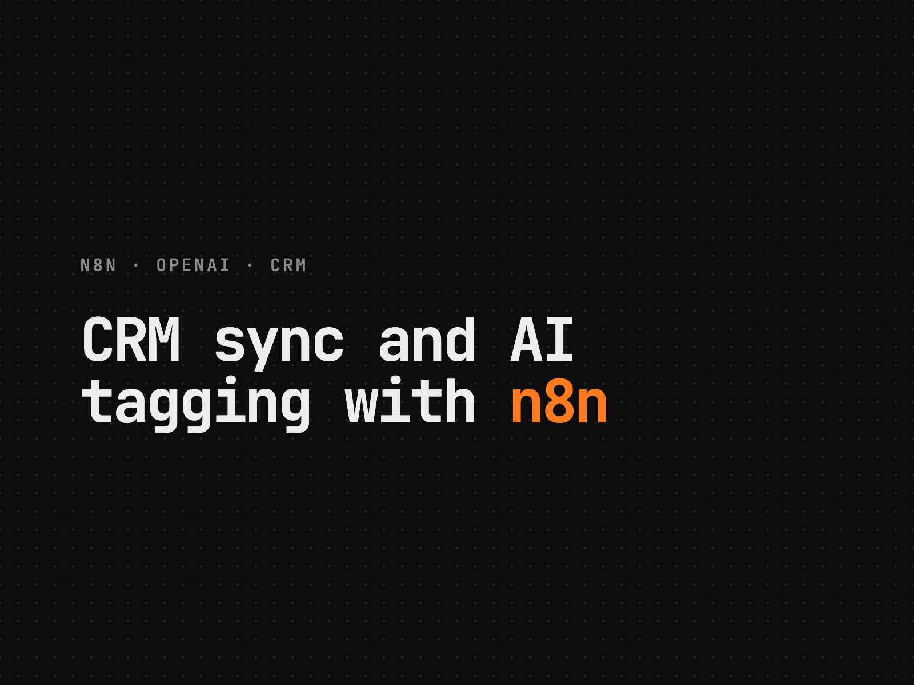

← all projects
Case study · Automation
AI-powered CRM Automation
Workflows for a German company that connect its CRM to the rest of its tools and keep the data up to date. An AI agent classifies the records and writes their descriptions and tags.

- Client
- Klyma
- Year
- 2025
- Type
- Automation
Context
Klyma is a German company that needed its CRM connected to the rest of its tools, with the data kept up to date.
What I built
Several n8n workflows that connect the CRM to the other tools and keep the records in sync.
Some of them use an agent built on the OpenAI API that classifies each record and writes its description and its tags.
Stack
- n8n
- The workflows.
- OpenAI API
- The agent that classifies and describes the records.
- CRM API
- Reads and writes the records.